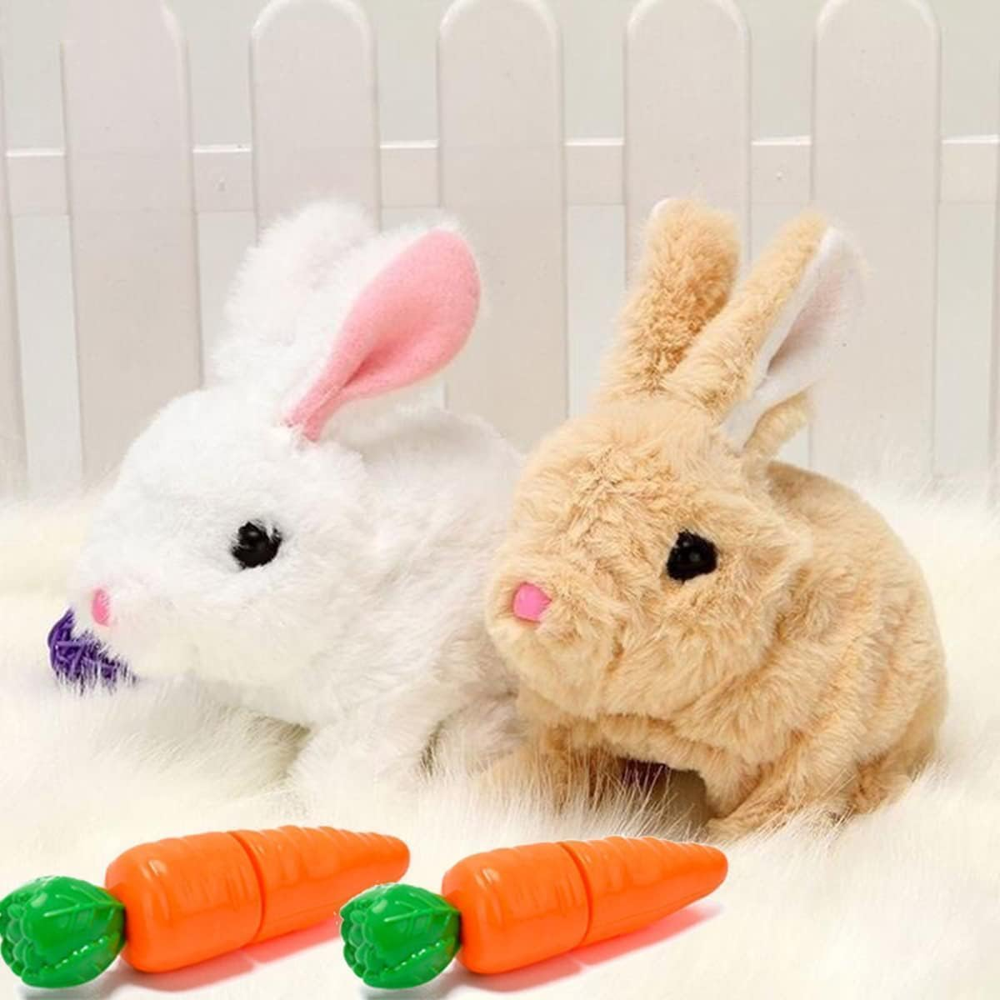
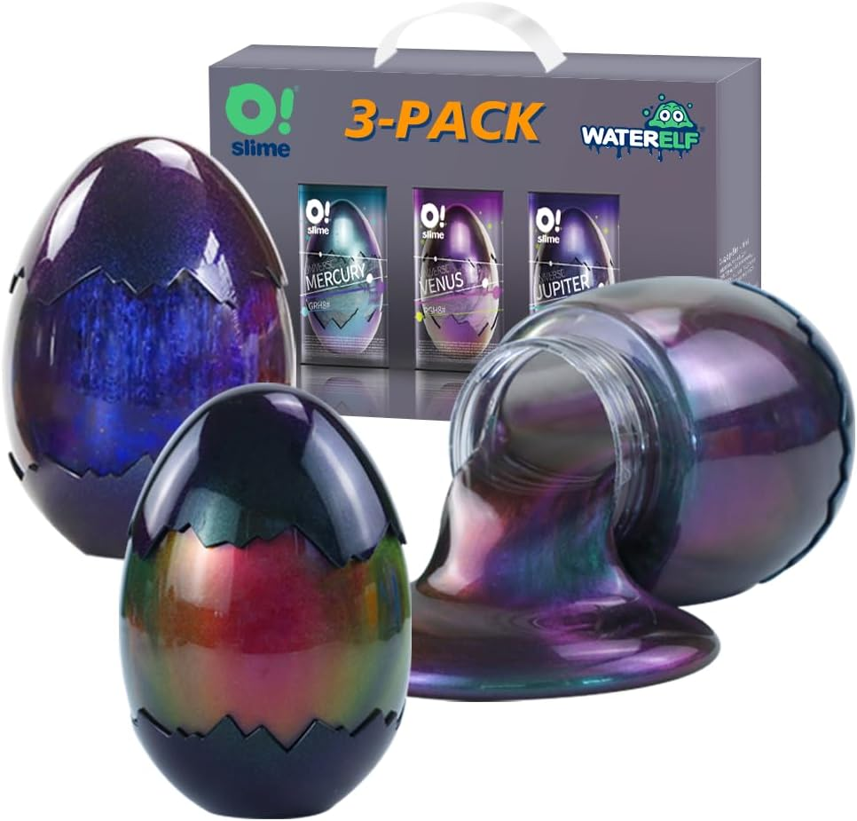
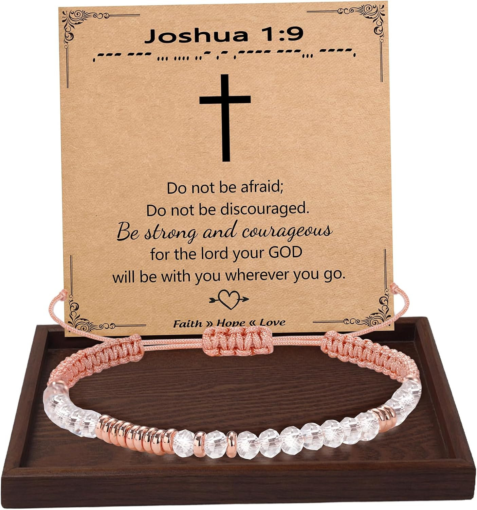
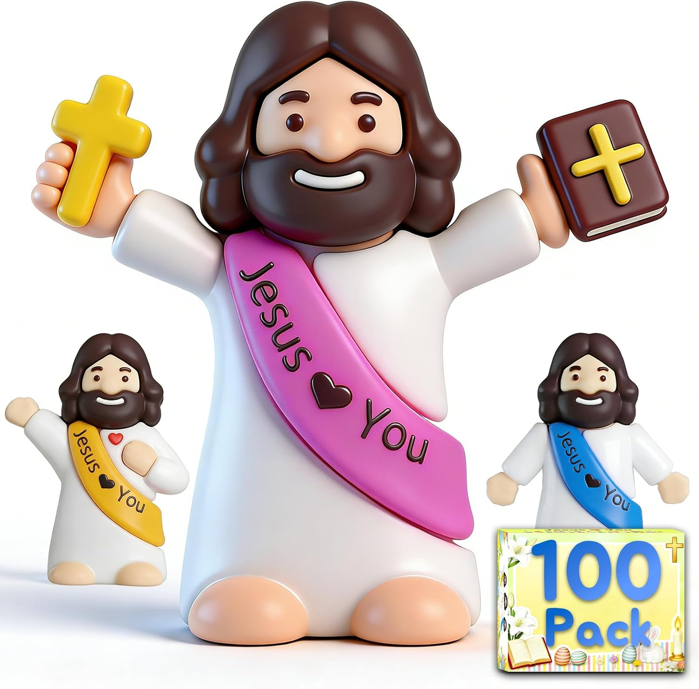
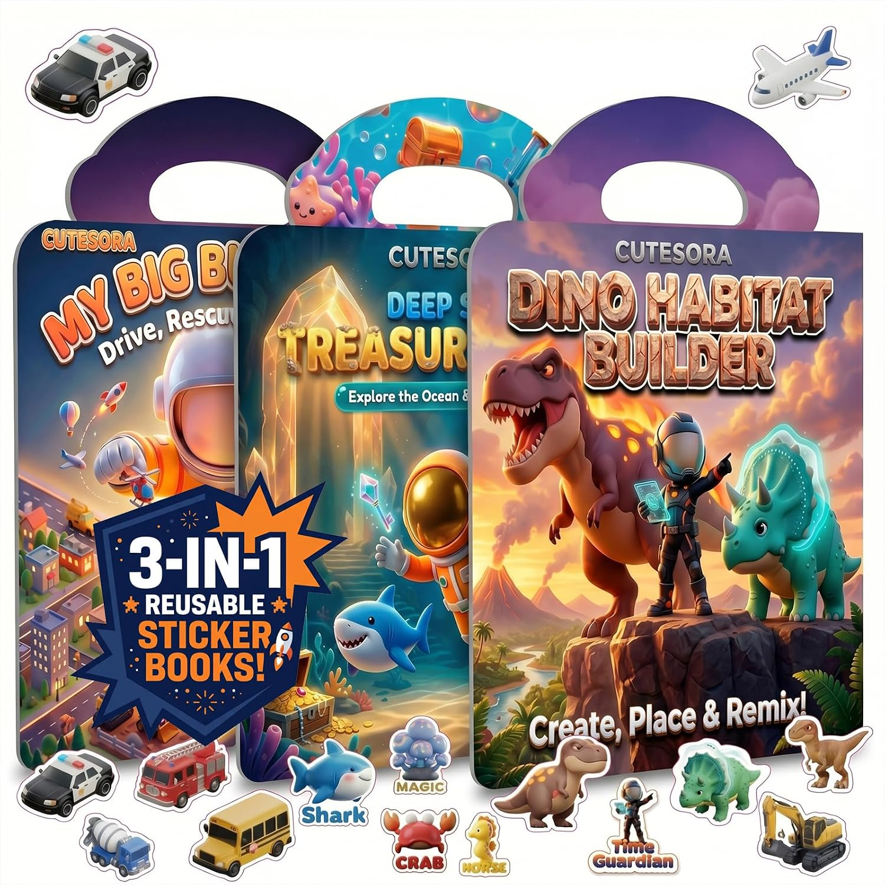
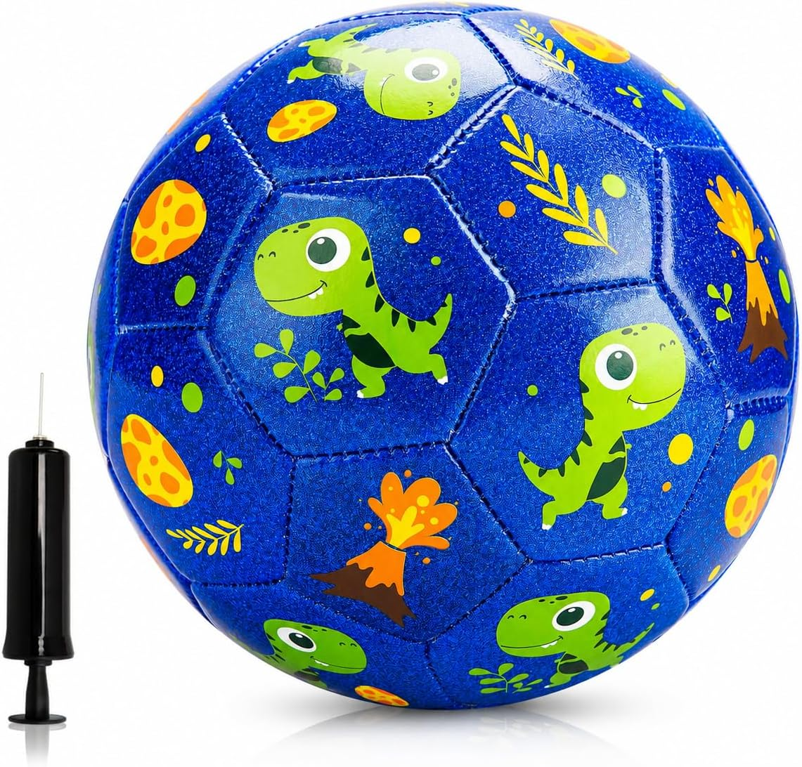

The second-biggest candy holiday after Christmas. But there are better Easter basket ideas.
The Insight: Easter has one of the lowest mismatch rates — it's genuinely about candy and spring. The key upgrade: don't just fill the basket with sugar. Mix in a quality toy, craft kit, or outdoor item alongside the chocolate. For older kids and teens, cash or digital gift cards inside a plastic egg = a memorable hunt.






Never scramble for a last-minute gift again.